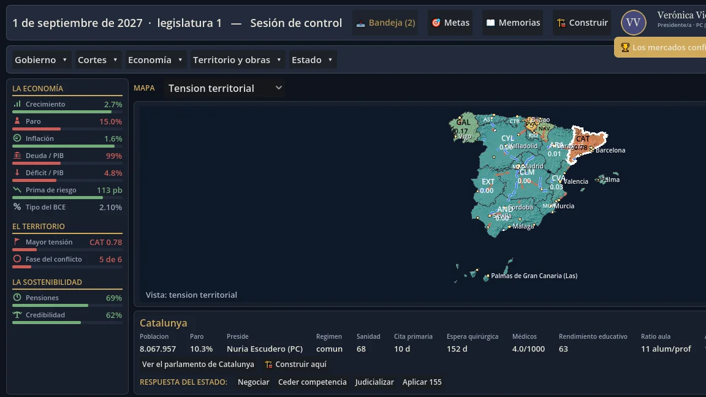
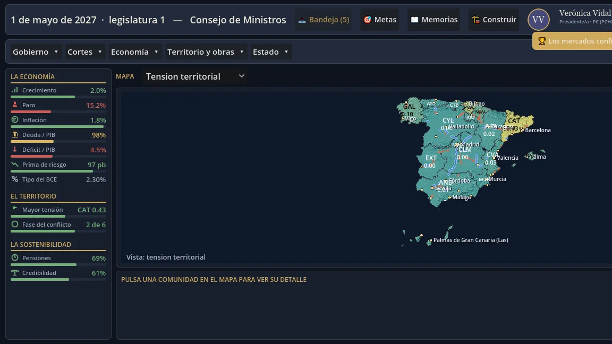
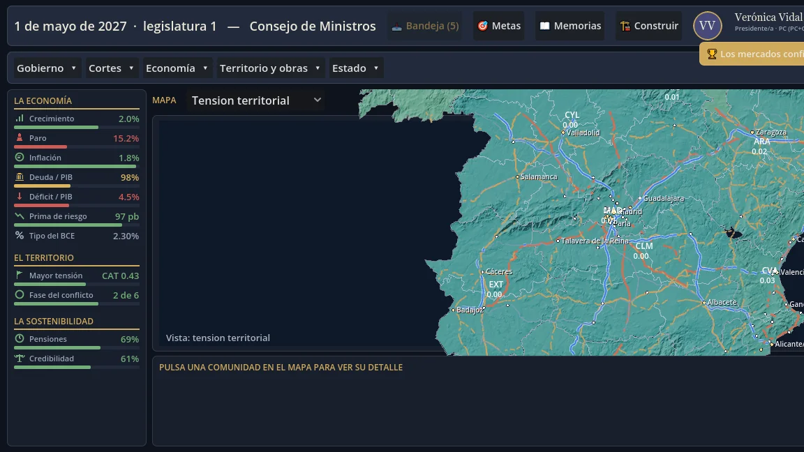
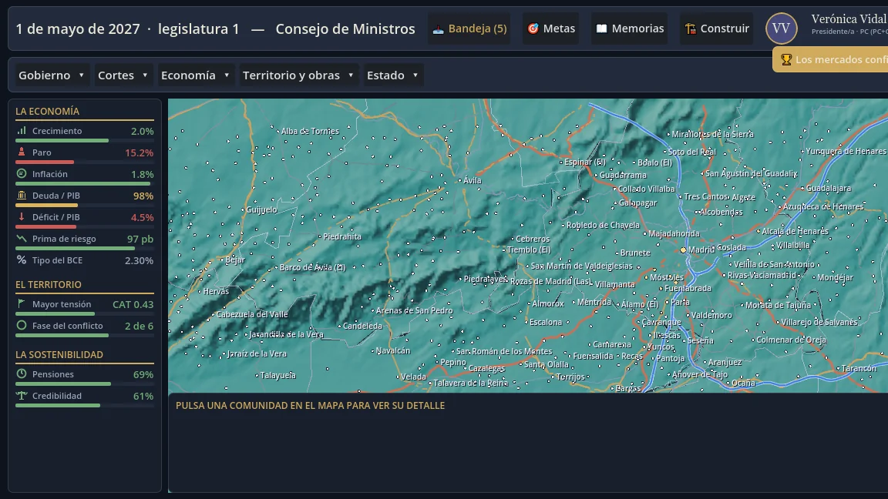
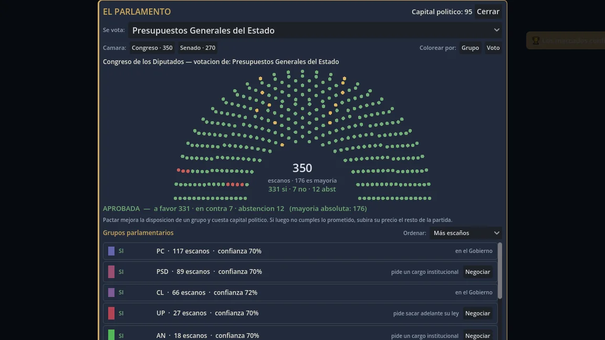
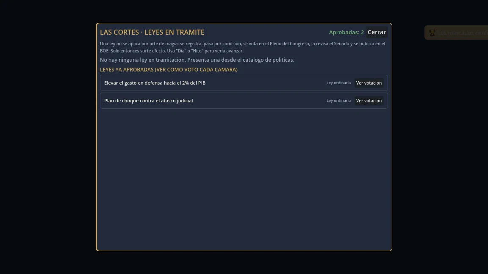
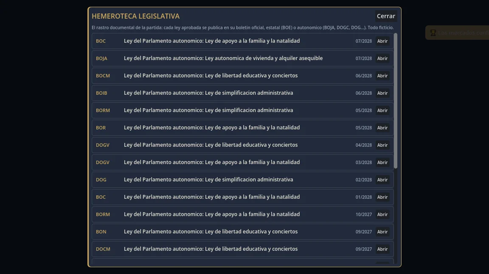
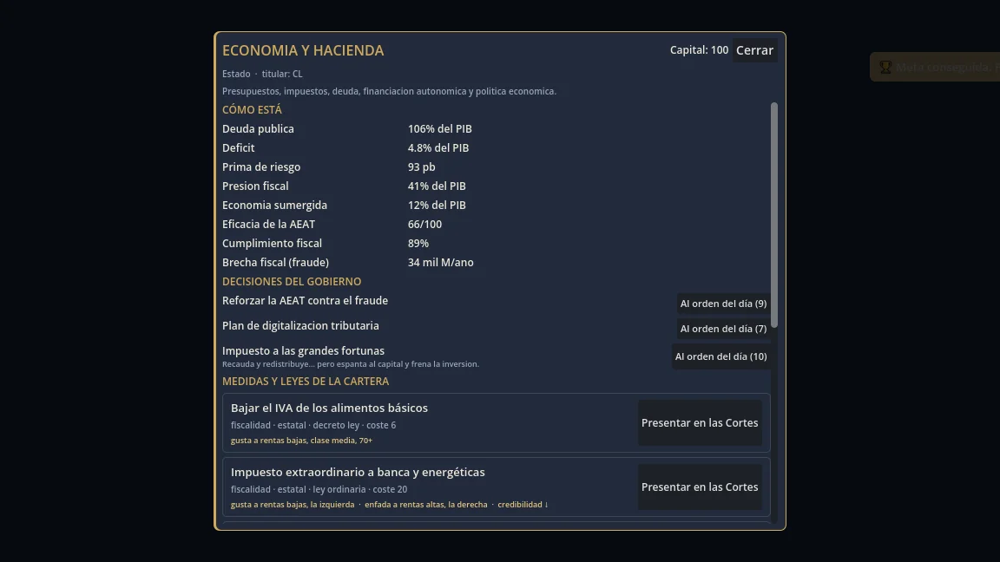
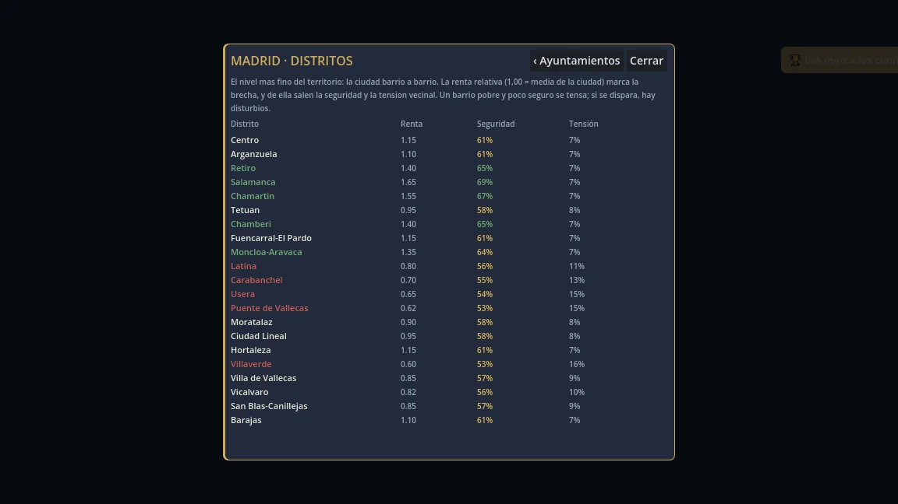

自社プロジェクト · 開発中
Poder y Nación
月単位のターン制で進む、ゼロから作ったスペインの政治・経済シミュレーター。これも受注仕事ではなく私たちのものであり、これらのスクリーンショットは実際に動作している画面です。
Poder y Nación とは
Poder y Nación は、プレイヤーを首相として——あるいはその座を狙う野党党首として——スペインの舵取りに就かせる、月単位ターン制の政治・経済シミュレーターです。政治の衣をまとった戦略ゲームではありません。国家が内部で実際にどう機能しているか、その省庁、議会、自治州、欧州との関係、そして統治者が下す一つひとつの判断がもたらす現実的な帰結を、現実的な遅れとともにモデル化しています。
一国だけを、徹底的に
このジャンルのシミュレーターは複雑さを数十か国に分散させ、その結果どうしても各国を汎用モデルで単純化します。私たちの賭けはその逆です。国をひとつに絞り、同ジャンルの他のどの作品にも見当たらない水準まで作り込む。19の自治州はプロジェクト初日からすべて揃っています——「まずは縮小版で」という時期は一度もありませんでした。各州は実際の議席構成を持つ独自の議会（カタルーニャ135、アンダルシア109…）を備え、固有名を持つ「地方の重鎮」が率いる州政府があり、それぞれの野心とマドリードへの親和——あるいは敵対——を抱え、独自の首班指名手続きを踏みます。第1回投票は絶対多数、第2回は単純多数、合意に至らなければ少数与党政権です。
選挙制度はドント方式を県ごとに再現し、350議席の配分は人口動態の変化に応じて選挙のたびに計算し直されます。その結果、スペインの選挙制度に実在する現象がひとりでに現れます——地域的に票が集中した小政党が、票数では上回る全国分散型の大政党よりも多くの議席を得る、といった具合です。モデルが生む不比例性をギャラガー指数で測ると、スペインの実際の選挙の幅の内側に収まります。
スクリーンショット









開発中バージョン（v0.5.0）のスクリーンショットです。登場する政党および人物はすべて架空のものです。最終的なアートは未確定であり、ここに写っているものは変更される可能性があります。
結果を眺めるのではなく、実際に統治する
最も深い差はここにあります。このゲームは国がどう推移するかを計算するだけではありません。統治という過程そのものをモデル化しています。立法エンジンは本物です——法案は実際の段階（登録、委員会、本会議、上院、官報公布）をたどり、その法形式が要求する多数を得たときにのみ発効します。上院は県代表色の強い独自構成を持ち、270議席で第一党が過大代表され、憲法第90条による実際の拒否権を備えます。下院がそれを覆せるのは、憲法が定める期間と多数要件を満たしたときだけです。可決された法律はそれぞれ架空の官報——国のもの、あるいは該当する自治州のもの——を生成し、ゲーム内アーカイブで閲覧でき、そのプレイの恒久的な記録として残ります。
閣議も実際に機能します。行政決定は即座に適用されず、議題に載せられ、閣議で承認されて初めて政令になります——通常の火曜の閣議、あるいは臨時閣議で——しかも政府がそれを政治資本で賄える場合に限られます。木曜に決めた政令が官報に載るのは翌週の火曜です。交渉には記憶があります。ある会派と取引すればその態度は軟化しますが、約束を反故にすれば、以後そのプレイの間ずっと相手の要求水準が上がります。そして少数与党で統治するとは、本当に少数与党で統治するということです——連立相手は任期途中で離脱をちらつかせ、譲るにせよ突っぱねるにせよ代償は大きく、政権が倒れるところまで行き得ます。
これらはどれも即座に効果を出しません。そこがまさに要点です。重要な構造改革で即効性のあるものなど存在しないからです。脱税対策を打ち出しても、その週のうちに税収は増えません。現実の税務当局と同じく、数か月かかります。財政赤字を放置しても、すぐには跳ね返ってきません——ある日EUが過剰赤字手続きを開始し、リスクプレミアムが跳ね上がるまでは。帰結は来ます。ただし遅れて来ます——だからこそ、目の前の火を消すことだけでなく、中期を見据えた統治が求められるのです。
地図こそが盤面
プレイのすべては実際のスペインの地図の上で進みます。19自治州の公式輪郭、簡略化した直線ではなく実際の曲線をそのまま持つ道路網と鉄道網、国土の輪郭で切り抜いた本物の山岳起伏、そして13種類の切り替え可能なデータレイヤー（地域的緊張、失業率、一人当たりGDP、医療、教育、医療待機日数、住宅価格、どこを誰が統治しているか…）。これらが地図を、国全体を常時映す体温計に変えます。地図は最新のデジタル地図と同じくズームに応じて区画単位で読み込まれ、最も細かい階層まで下ります。47の大都市はそれぞれ選挙法に基づきドント方式で配分された市議会を持ち、大都市はさらに行政区に分かれ——マドリードは21、バルセロナは10——各区が実際の相対所得を持ち、そこからその地区の治安と社会的緊張が導かれます。
すでに実在している部分
宣言ではなく、設計で中立
登場する政党はすべて架空です。制度は写実的ですが、実在の政治勢力を指す名前は一つもありません。そしていかなるイデオロギーも設計上優遇も冷遇もされません——世論の中心は、設計者があらかじめ固定するのではなく、そのプレイで実際に成立している政党配置そのものの重心に常にアンカーされるよう、数学的に構築されています。新しいコンテンツを追加するたびに20年分のバランス検証を回し、いずれのイデオロギー配分も偏らないことを確認しています。このゲームは各判断の帰結を示します。どれが正解かは告げません。
どう作られているか
ゲームはすべて Godot で構築しています。シミュレーションコアはGUIなしで動作し——だからこそ20年分のプレイを数秒でシミュレートしてテストと調整ができます——プレイ可能なインターフェースはビジュアルエディタを使わず、すべてコードで組んでいます。ゲームの内容（政策、イベント、調整パラメータ）はコード内ではなく外部データに置いてあるため、拡張のためにエンジンへ手を入れる必要がありません。
地図はオープンデータを利用し、各ライセンスが求める帰属表示を行っています。道路網・鉄道網および街路データは OpenStreetMap とその貢献者より（ODbLライセンス）、起伏は Terrarium 標高データ（AWS Open Data）より、公式の行政区画輪郭はスペイン国立地理院より geoBoundaries 経由（CC BY 4.0）で取得しています。